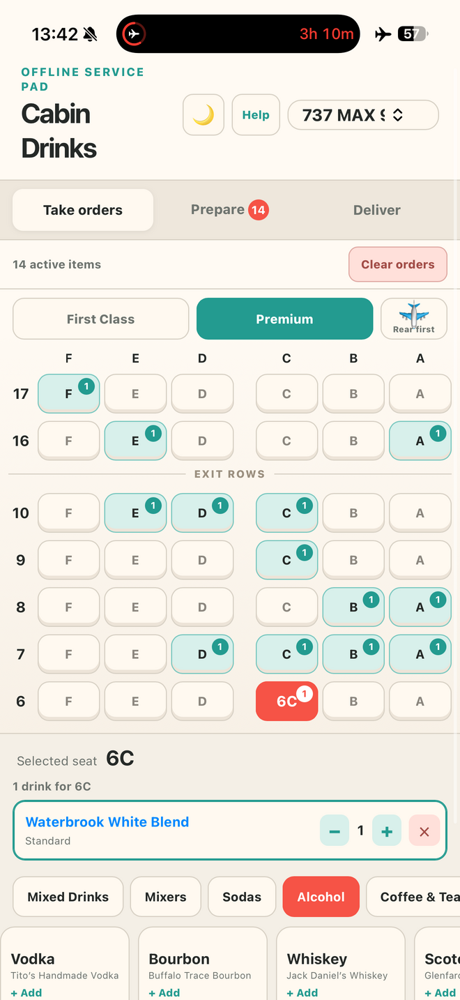
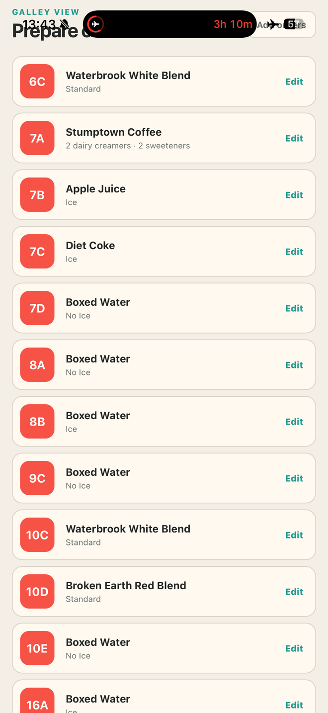

Take
Choose First Class or Premium, tap a seat, then add drinks and First Class food choices.
Built for inflight service
Tap a seat, add beverages and First Class food choices, prepare everything in the galley, and check complete orders off during delivery. After installation, it works without an internet connection.
No account. No passenger names. Orders stay on your device.


Choose First Class or Premium, tap a seat, then add drinks and First Class food choices.
See food tallies and complete galley instructions grouped by seat, including quantities and modifiers.
Return to the cabin and confirm each seat’s complete food-and-beverage order as it is delivered.
Improved by crew feedback
Recent requests from working crew have made Cabin Drinks quicker to navigate, clearer in the galley, and more dependable when the cabin goes offline.
Crew reaction
Cabin Drinks began as one flight attendant’s workaround. Within days, crew members were downloading it, trying it inflight, and helping shape what came next.
“I’ve used this every flight since learning about it — it’s chef’s kiss.”
“Game changer!”
“This is what I’ve been wanting for so long. It would make our job so much easier.”
“This is genius!”
“Can’t wait to use it tonight.”
“Downloading now! This is so cool.”
“Thank you for putting something functional together for us to use.”
Install on your phone
Tap the button and Cabin Drinks will show only the instructions for your device. Once its files are safely stored, you’ll see an Offline Ready confirmation.
Quick start
Select the aircraft and cabin. In First Class, set up today’s food inventory.
Tap a seat and add each requested food item and drink.
Use Common Drinks or Build Your Own for mixed combinations.
Open Prepare for galley totals, then Deliver when you return to the cabin.
FROM ONE FLIGHT ATTENDANT TO ANOTHER
…but if we’ve worked a flight together, you probably know me as Elio.
Cabin Drinks started as something I built for myself to make beverage and meal service a little less chaotic.
Thanks to ideas from other crew members, it’s grown into a tool that’s constantly evolving to make our jobs a little easier.
When I’m not flying, you’ll usually find me behind a camera covering sporting events around the world.
Built one flight at a time
See how Cabin Drinks grew from a simple seat-and-drink pad into a complete offline service companion.
A guided, device-aware installation and a clearer guarantee that Cabin Drinks is ready to fly.
A clearer reset and a smoother First Class food setup on iPhone.
Less hunting, less horizontal scrolling, and stronger offline reliability.
Replace the paper meal tally with a live, flight-specific inventory.
A calmer, clearer experience for overnight service.
The reversed map now matches what crew actually see while walking the aisle.
Help improve it
Cabin Drinks was created by Zach as an independent crew tool. Tell me what would make it more useful on your flights.
zach@hizach.comInstall on iPhone
After adding it to your Home Screen, launch Cabin Drinks once while online to finish offline setup.